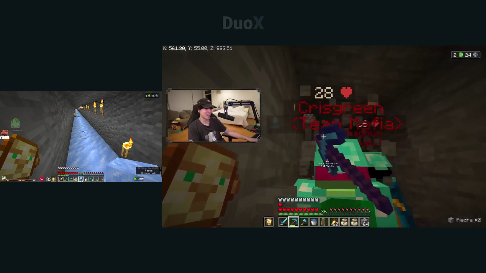
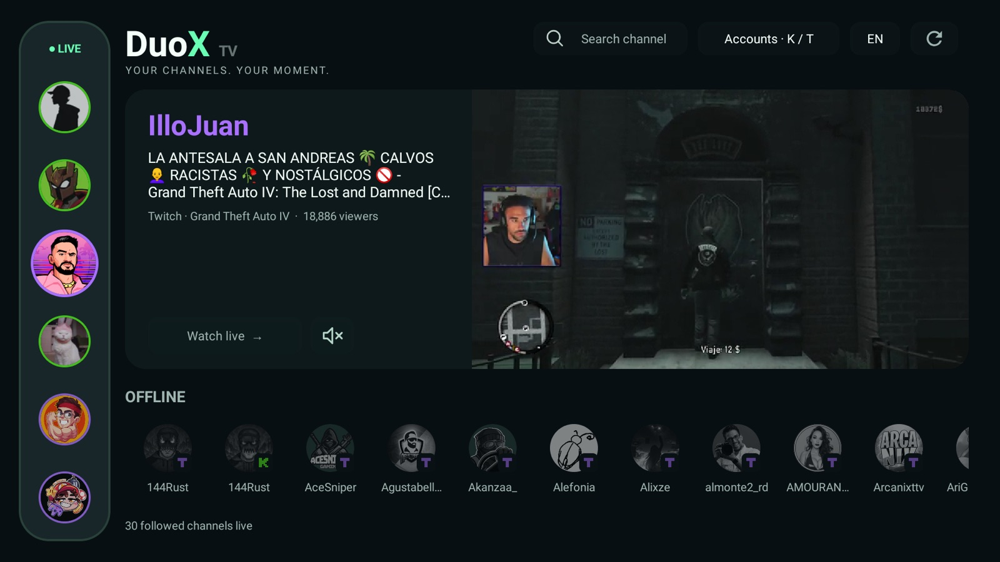
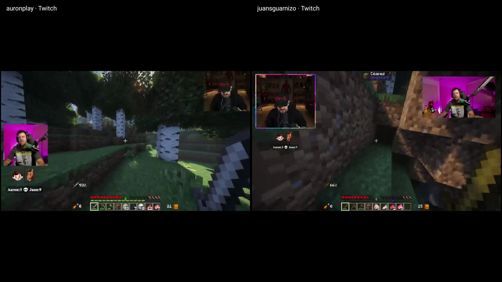
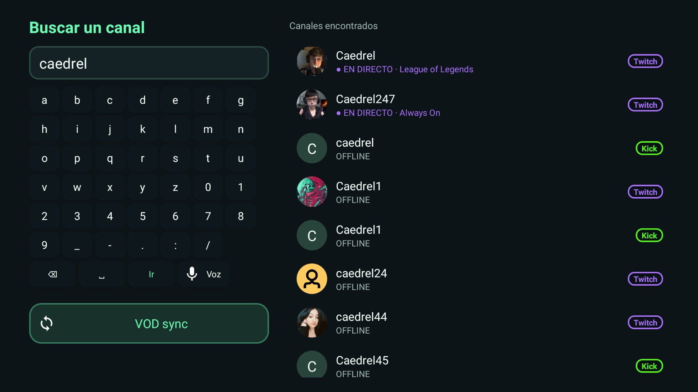
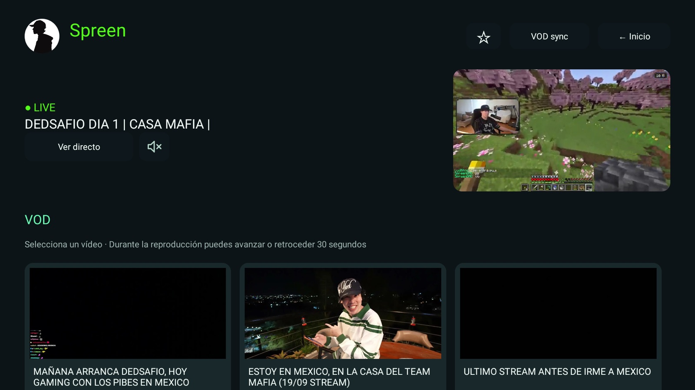
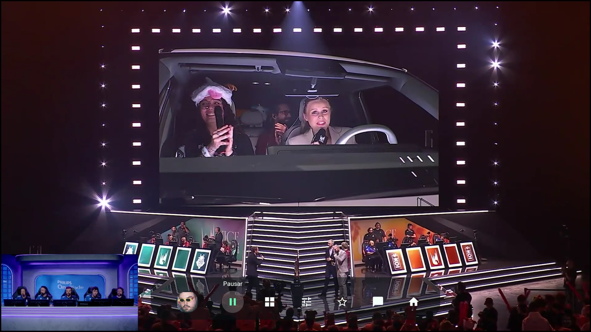
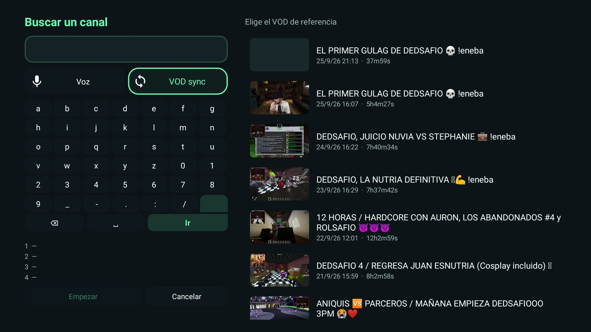

Home
Your live channels at a glance
A LIVE panel with your Twitch and Kick channels sorted by viewers and a live preview of the one you select. No menus: everything with the remote.
A light, clutter-free app to watch your favorite streamers with a remote: up to four live streams at once, synced VODs, and everything one click away.
Free · 1.5 MB APK · Android 9 or later


A LIVE panel with your Twitch and Kick channels sorted by viewers and a live preview of the one you select. No menus: everything with the remote.
Mix Twitch and Kick on the same screen. Pick which channel plays audio with up and down and set the quality of each one without leaving the player.
Choose up to four VODs and DuoX TV analyzes the audio in the background to line them up right where the streamers talk together. Here, AuronPlay and JuanSGuarnizo at the same instant.

Built-in keyboard, voice search and real Twitch and Kick results with live channels first.

Each channel has its live preview, dated VODs and “Continue watching” so you pick up where you left off.

A thin translucent bar with icons. Auto or manual quality, favorites and a QR chat you can read on your phone.

When two streamers play together, each one broadcasts their own point of view. VODSYNC puts the VODs side by side and aligns them by audio, so you never hunt for the exact second.

Search “Downloader” in your Fire TV Appstore and install it. Allow it to install unknown apps.
Open it, type the code 9565357 in the box at the top and press Go.
Accept the install. Inside the app, the ↻ icon checks for new versions and downloads them.
9565357Just type this number in Downloader and press Go.https://github.com/danikdejesus1/DuoX-TV/releases/latest/download/DuoX.apkDuoX TV is a free app for Fire TV and Android TV to watch Twitch and Kick live streams and VODs with a remote, featuring multiview of up to four channels, synced VODs, voice search and QR chat. It is created by DanikDeJesus.
Yes. It is built for Fire TV (Fire OS 7 or later) and runs on Android TV 9 or later. It has been tested on Fire OS 7; four streams at top quality can exceed what an entry-level Fire TV can decode, so quality is capped when using several screens.
Yes, that is the point. Multiview mixes channels from both platforms and lets you choose which one plays audio.
It plays several VODs of streamers who talked together at the same moment. The app compares audio in the background to align them; if it finds no shared voices it starts at the start time and you can adjust the offset by hand.
Not to watch public content or search channels. To see your follows you connect Twitch by scanning a QR and Kick by signing in on its official page. The app never asks for your Twitch password.
No. DuoX TV is an independent, experimental client, not affiliated with Twitch, Kick or Amazon. Trademarks, channel names and images belong to their owners.
Inside the app, press the ↻ icon next to the language button: it checks the latest release on GitHub and downloads it; Android’s installer asks for the final confirmation.
Everything stays on your device: there is no own server and no analytics. Twitch tokens are stored encrypted and you can disconnect each account from Accounts.
Download the APK, install it and tell us what you would improve.